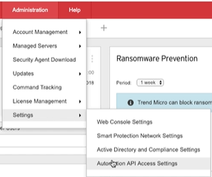

Apex One API:
Add numerous Apis:
- Agent Management
List Agents,Relocate in different, etc
- Investigation API's
IOC sweep (search), YARA Scan, etc
- Response API'S
Isolate, Restore, etc
API Documentation:
- docs trendmicro.com
automation Api Guide
API Demo Projects:
- Visual Studio
- Python
